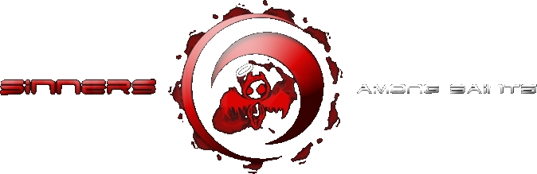

A competitive gaming guild forged in the fires of Ultima Online's beta. Three decades of brotherhood, rivalry, and conquest across the digital frontier.
Our Story ScreenshotsOriginally founded as the Sosarian Armed Services, SAS became one of the most feared Player Killer guilds in Ultima Online history.
Founded by Rivan and Aries during the 1996 UO Closed Beta on the Pacific shard. What started as a mercenary guild became something legendary.
Moved to Sonoma on launch day, December 13, 1997. SAS quickly became the dominant force on the shard, growing to 40+ members by mid-1998.
From Counter-Strike to World of Warcraft, Asheron's Call to Lineage, SAS carried its competitive spirit across every game it touched.
Rivan won the Tournament of Champions at the Free City of Oasis, defeating the winners of the first 49 Fight Nights in a ranked tournament.
A multi-month server-wide war between the PKs and Anti-PKs of Sonoma. SAS vs the Blood Clan, drawing in allies from across the shard.
SAS was among the first guilds on the Siege Perilous test shard, grinding fast to secure boats, houses, and dominance from day one.